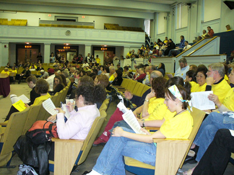
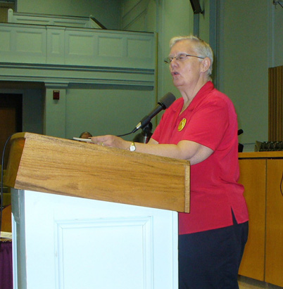
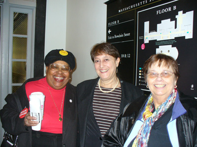
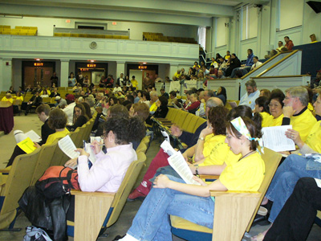
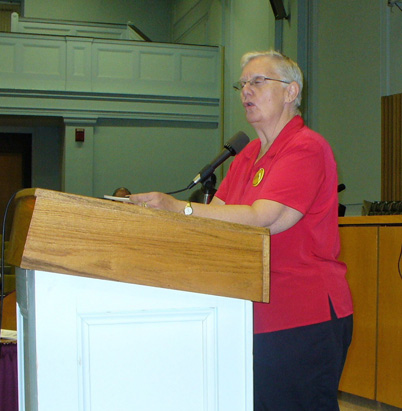
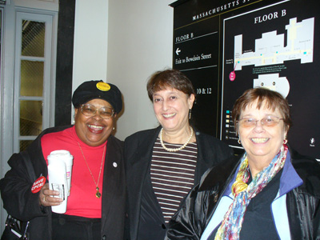

Survival News est. 1986 Survivors, Inc.
...the voices of low-income women

PHENOMenal Advocates Press Legislators and Governor to Support Public
Higher Education
By Jackie Dee King
Calling for an end to the corporatization of
higher education, hundreds of teachers, students and staff from campuses
across the state visited their legislators on April 25 at the State House.

The Lobby Day was
organized by PHENOM, the newly formed Public Higher Education Network of
Massachusetts. Advocates delivered 16,000 post cards to legislators and more
than 5,000 to Gov. Deval Patrick. Survivors Inc. members who are students,
staff, and alumnae of UMass, Boston turned out to support the cause.
“When the budget comes
out in the spring (and we see the allocation for higher ed), those are not
tears of joy, those are tears of woe,” declared Lisa Field from Fitchburg
State College and President of AFSCME Local 1067, at a rally in Gardner
Auditorium before the lobbying began. “We are tired of crying and tired of
begging for public higher education!”
Mishy Leiblum, Student
Trustee from UMass/Amherst, noted that “according to a recent study, this
year’s college freshmen are wealthier than at any point in the past 35 years
and the income gap is widening between their families and the rest of the
nation.”
“Access to
education—which is supposed to be the great social equalizer—is instead
driving a wedge between the poor and the wealthy,” she added. Many students
are using “unhealthy coping strategies to manage this crisis in
affordability” including taking on multiple jobs while in school, stacking
up on credits to graduate earlier, and taking out excessive amounts of loan
and credit card debt to stay in school, she noted.
“We need a GI Bill for
everybody,” Leiblum said to loud applause. “Ulimately, we need to provide
FREE public higher education for all qualified residents of
Massachusetts…And if you think free higher education is crazy, tell that to
the majority of industrialized nations who provide free public higher
education for their residents.”
Isolda Ortega-Bustamente
of Holyoke Community College discussed the many barriers Latino students
face in accessing higher education. “We built this nation and we’re not
moving!” she vowed.
Susan Moir, Director
of the Labor Resource Center at UMass, Boston roused the crowd with chants
about the “PHENOMenal Lobby Day!” and the “Beginning of a New Day for Public
Education!” She divided the audience into 20 lobby teams, which then spread
out across the State House.

(Susan Moir, Director of the Labor Resource Center at UMass)
On the way to the
Governor’s office, Survivors Inc. Board Member Diane Dujon, Director of
Experiential Learning at the College of Public and Community Service (CPCS)
at U/Mass, Boston, said, “CPCS is like the canary in the mine. First they
come after the programs that serve the most vulnerable populations and then
they target everybody else. It’s encouraging to see these hundreds of people
here today. They know they are next!”

(Survivors Inc. Board members (from left) Diane Dujon,
Laurie Taymor-Berry, and Dottie Stevens)
PHENOM's lobby day: Make Higher
Education Affordable, Hire More Teachers, Researchers and Staff:
click here.
For a list of PHENOM’s
legislative priorities, click here.
Survivors, Inc., (617) 298-7311

Last Modified 5/2007 info..at..cqs.com
This Internet site provides links or references to other sites
that
are provided as a convenience to users of this site.
We have
no control over the content of such other sites
and shall not
be liable for any
damages or injury arising from that content.
Survivors, Inc.
95 Standard St.
Mattapan, MA 02126
Copyright © 2004-2007 Survivors, Inc. All Rights Reserved.

Grassroots logo by Claire Cummings
|
|
PHENOMenal Advocates Press Legislators and Governor to Support Public Higher Education By Jackie Dee King Calling for an end to the corporatization of higher education, hundreds of teachers, students and staff from campuses across the state visited their legislators on April 25 at the State House.  The Lobby Day was organized by PHENOM, the newly formed Public Higher Education Network of Massachusetts. Advocates delivered 16,000 post cards to legislators and more than 5,000 to Gov. Deval Patrick. Survivors Inc. members who are students, staff, and alumnae of UMass, Boston turned out to support the cause. “When the budget comes out in the spring (and we see the allocation for higher ed), those are not tears of joy, those are tears of woe,” declared Lisa Field from Fitchburg State College and President of AFSCME Local 1067, at a rally in Gardner Auditorium before the lobbying began. “We are tired of crying and tired of begging for public higher education!” Mishy Leiblum, Student Trustee from UMass/Amherst, noted that “according to a recent study, this year’s college freshmen are wealthier than at any point in the past 35 years and the income gap is widening between their families and the rest of the nation.” “Access to education—which is supposed to be the great social equalizer—is instead driving a wedge between the poor and the wealthy,” she added. Many students are using “unhealthy coping strategies to manage this crisis in affordability” including taking on multiple jobs while in school, stacking up on credits to graduate earlier, and taking out excessive amounts of loan and credit card debt to stay in school, she noted. “We need a GI Bill for everybody,” Leiblum said to loud applause. “Ulimately, we need to provide FREE public higher education for all qualified residents of Massachusetts…And if you think free higher education is crazy, tell that to the majority of industrialized nations who provide free public higher education for their residents.” Isolda Ortega-Bustamente of Holyoke Community College discussed the many barriers Latino students face in accessing higher education. “We built this nation and we’re not moving!” she vowed. Susan Moir, Director of the Labor Resource Center at UMass, Boston roused the crowd with chants about the “PHENOMenal Lobby Day!” and the “Beginning of a New Day for Public Education!” She divided the audience into 20 lobby teams, which then spread out across the State House.
 On the way to the Governor’s office, Survivors Inc. Board Member Diane Dujon, Director of Experiential Learning at the College of Public and Community Service (CPCS) at U/Mass, Boston, said, “CPCS is like the canary in the mine. First they come after the programs that serve the most vulnerable populations and then they target everybody else. It’s encouraging to see these hundreds of people here today. They know they are next!”
 PHENOM's lobby day: Make Higher Education Affordable, Hire More Teachers, Researchers and Staff: click here. For a list of PHENOM’s legislative priorities, click here. Survivors, Inc., (617) 298-7311 Last Modified 5/2007 info..at..cqs.com This Internet site provides links or references to other sites that are provided as a convenience to users of this site. We have no control over the content of such other sites and shall not be liable for any damages or injury arising from that content. Survivors, Inc. 95 Standard St. Mattapan, MA 02126 Copyright © 2004-2007 Survivors, Inc. All Rights Reserved. Grassroots logo by Claire Cummings |
|